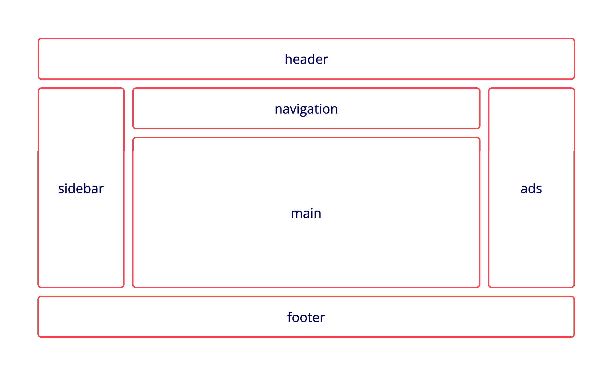
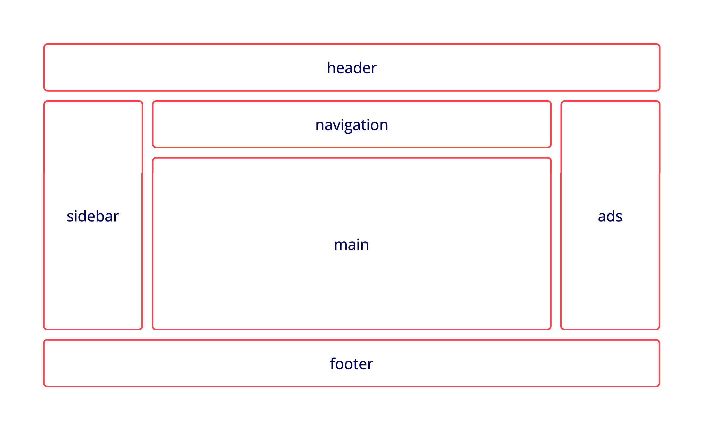

Responsive grid using grid-areas
Den här uppgiften skulle vi lära oss att göra en Responsive hemsida där den ska funka från en dator tablet och mobil. Här är exemplet vi fick om hur det skulle se ut.

Den här uppgiften skulle vi lära oss att göra en Responsive hemsida där den ska funka från en dator tablet och mobil. Här är exemplet vi fick om hur det skulle se ut.

Jag jobbar främst i köpcentrum där jag ansvarar för samtliga larm som går i köpcentrumet. Jag har också hand om utlåning av accesskort och nycklar till fasigheten. Jag jobbar även hos socialtjänst som ordningsvakt och receptionist och har då hand om bland annat ordningen men också att besökarna hänvisas till rätt avdelning och personal.
Jag jobbar som krog vakt och min huvudsakliga arbetsuppgift är att skapa samt bibehålla en trygg och trevlig stämning för både personalen och krogbesökarna. Jag arbetade med allt från att legitimera gäster, avisa och avlägsna gäster till att besvara gästernas frågor.
Barn och fritid 2012-2015
Legitimerad ordningsvakt HRL Svenska Engelska Tigrinja
Den här uppgiften fick vi göra på uppstarten av kursen ett kort med en pager där nere där vi skulle ha en text inne i korten med en liten rubrik .